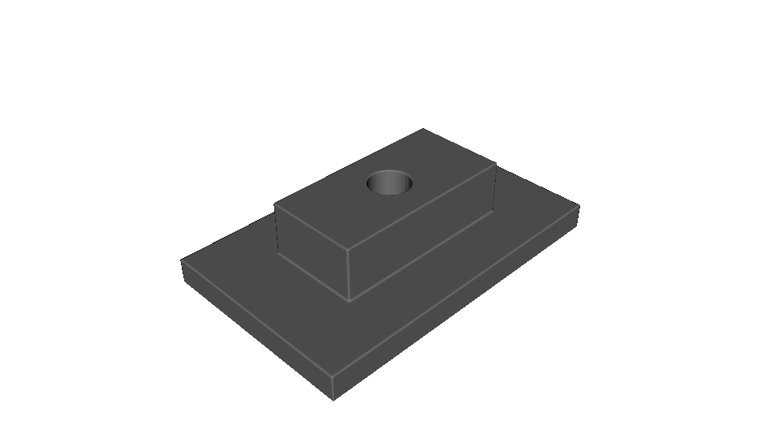
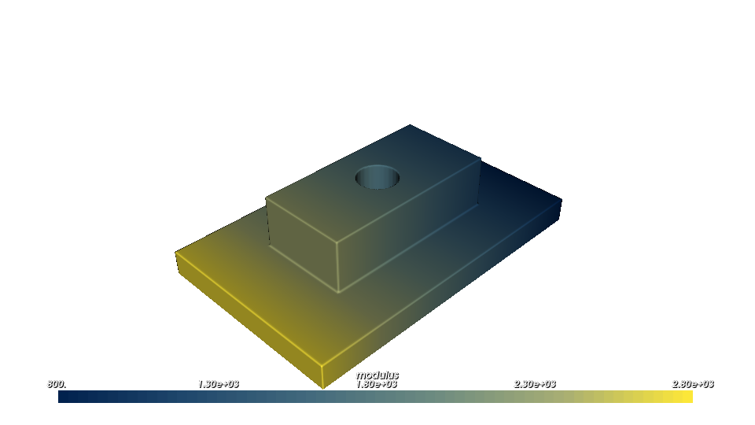
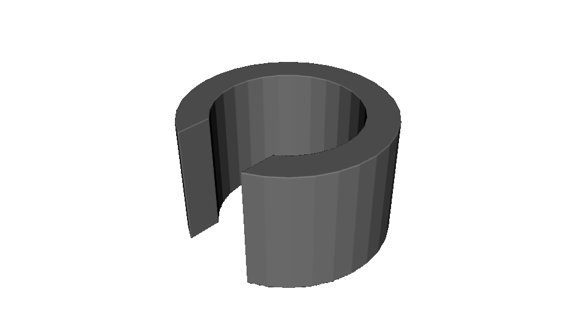
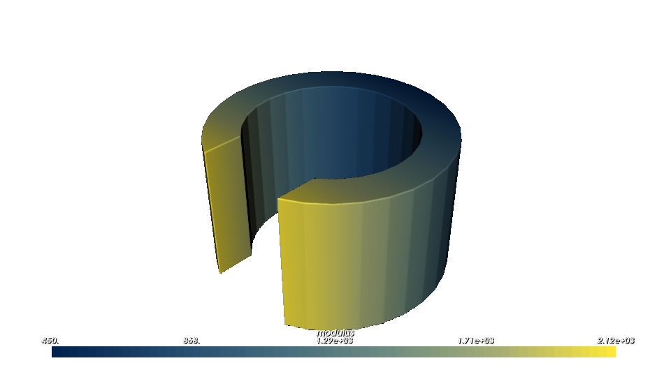
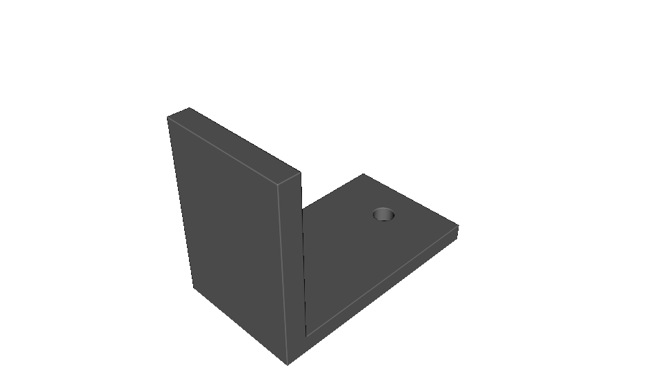
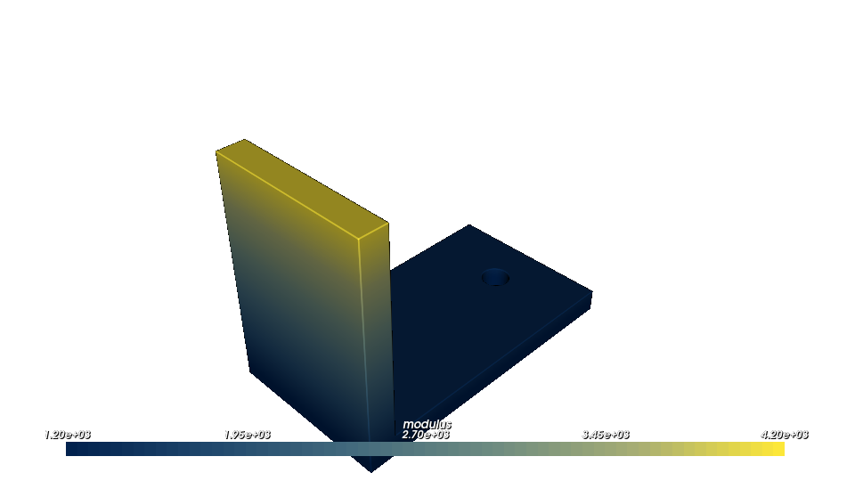
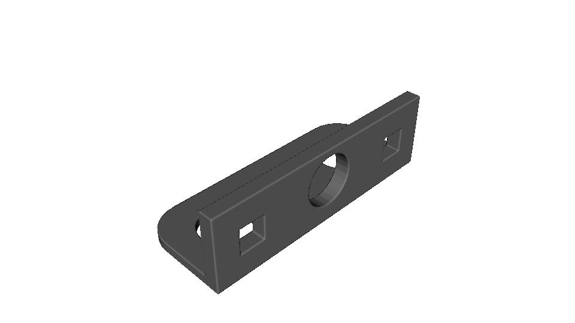
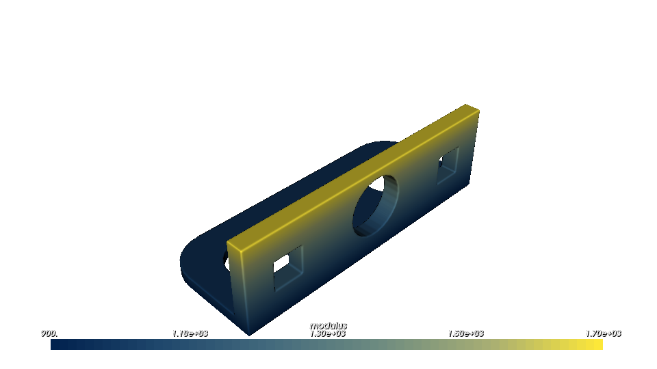

Authoring CAD with CadQuery#
CadQuery is a Python library for creating parametric boundary-representation CAD models. OpenVCAD complements it: CadQuery defines the part boundary, then OpenVCAD attaches continuous attributes such as modulus, density, color, or volume fractions throughout that part’s volume.
This guide assumes you have completed Getting Started and Functional grading. It stays with CadQuery’s fluent Workplane API; see the CadQuery documentation for sketches, selectors, assemblies, and advanced operations.
Install CadQuery#
CadQuery is optional because it brings a substantial CAD kernel with it:
pip install "OpenVCAD[cad]"
The workflows below need only cadquery, pyvcad, and pyvcad_rendering. They do not require pyvcad-metamaterials.
The handoff: closed solids become volumes#
CadQuery works with boundary representations: vertices form edges, edges form wires, wires form faces, and closed faces form a solid. OpenVCAD needs the last of those for volumetric modeling: its implicit CAD node must be a closed Solid, or a compound made entirely of closed solids. A face, shell, wire, or sketch has no unambiguous inside/outside region and cannot be converted into an OpenVCAD volume.
pv.CADModel.from_cadquery(...) accepts a CadQuery Workplane, Shape, or selected iterable. It retains the model through an in-memory BREP transfer; no temporary STEP file is written. Call to_node() only after the selected result is a closed volume.
cad_model = pv.CADModel.from_cadquery(cadquery_part)
root = cad_model.to_node(use_fast_mode=True)
Use use_fast_mode=True for interactive rendering and voxel-style workflows. It discretizes the solid during prepare() for faster sampling. Use False when exact CAD evaluation is more important than speed.
Inspect the CadQuery model first#
CadQuery itself is a library, not a viewer. To inspect a work-in-progress in CQ-Editor, append this line after building the part:
show_object(cadquery_part)
show_object is supplied by CQ-Editor’s CadQuery execution environment, so do not add it to a normal terminal script. In CQ-Editor it lets you inspect intermediate solids before handing the final closed solid to OpenVCAD. CadQuery documents this script-output convention in its object-output guide.
A toy part: parametric mounting plate#
Start with a workplane, make a base box, select its top face, then add a raised boss and a hole. The parameters below serve two jobs: they size the CAD features and normalize the OpenVCAD modulus field across the plate.
import cadquery as cq
import pyvcad as pv
import pyvcad_rendering as viz
plate_length = 48.0
plate_width = 30.0
plate_thickness = 4.0
boss_length = 28.0
boss_width = 14.0
boss_height = 8.0
hole_diameter = 6.0
modulus_min = 800.0
modulus_max = 2800.0
cadquery_part = (
cq.Workplane("XY")
.box(plate_length, plate_width, plate_thickness)
.faces(">Z")
.workplane()
.rect(boss_length, boss_width)
.extrude(boss_height)
.faces(">Z")
.workplane()
.hole(hole_diameter)
)
root = pv.CADModel.from_cadquery(cadquery_part).to_node(use_fast_mode=True)
modulus_expr = (
f"{modulus_min} + ({modulus_max} - {modulus_min}) "
f"* ((x + {plate_length / 2.0}) / {plate_length})"
)
root.set_attribute(pv.DefaultAttributes.MODULUS, pv.FloatAttribute(modulus_expr))
viz.Render(root)
{kind=link}

{kind=link}

The complete script is cadquery_parametric_mounting_plate.py.
Practical part: compliant cable clamp#
This cable clamp starts from two concentric circles extruded into a ring. Subtracting the rectangular opening turns the ring into a closed C-shaped clamp. cable_radius and wall_thickness determine both the clamp geometry and the span of the stiffness transition.
import cadquery as cq
import pyvcad as pv
import pyvcad_rendering as viz
cable_radius = 7.0
wall_thickness = 3.0
clamp_width = 12.0
opening_width = 8.0
opening_depth = 10.0
modulus_min = 450.0
modulus_max = 2200.0
outer_radius = cable_radius + wall_thickness
ring = cq.Workplane("XY").circle(outer_radius).circle(cable_radius).extrude(clamp_width)
opening = (
cq.Workplane("XY")
.center(outer_radius - opening_depth / 2.0, 0.0)
.rect(opening_depth, opening_width)
.extrude(clamp_width)
)
cadquery_part = ring.cut(opening)
root = pv.CADModel.from_cadquery(cadquery_part).to_node(use_fast_mode=True)
modulus_expr = (
f"{modulus_min} + ({modulus_max} - {modulus_min}) "
f"* clamp((x + {outer_radius}) / {2.0 * outer_radius}, 0, 1)"
)
root.set_attribute(pv.DefaultAttributes.MODULUS, pv.FloatAttribute(modulus_expr))
viz.Render(root)
{kind=link}

{kind=link}

The complete script is cadquery_compliant_cable_clamp.py.
Practical part: equipment bracket#
For a mounting bracket, build and perforate the base before fusing it with an upright. upright_height controls both the upright’s geometry and the vertical modulus ramp, providing a simple way to express a stiffer load-bearing arm above a more compliant mounting base.
import cadquery as cq
import pyvcad as pv
import pyvcad_rendering as viz
base_length = 64.0
base_width = 36.0
base_thickness = 5.0
upright_height = 48.0
upright_thickness = 6.0
mounting_hole_diameter = 6.0
mounting_hole_spacing = 42.0
modulus_min = 1200.0
modulus_max = 4200.0
base = (
cq.Workplane("XY")
.box(base_length, base_width, base_thickness)
.faces(">Z")
.workplane()
.pushPoints([(-mounting_hole_spacing / 2.0, 0.0), (mounting_hole_spacing / 2.0, 0.0)])
.hole(mounting_hole_diameter)
)
upright = (
cq.Workplane("XY")
.box(upright_thickness, base_width, upright_height)
.translate((base_length / 2.0 - upright_thickness / 2.0, 0.0, upright_height / 2.0))
)
cadquery_part = base.union(upright)
root = pv.CADModel.from_cadquery(cadquery_part).to_node(use_fast_mode=True)
modulus_expr = (
f"{modulus_min} + ({modulus_max} - {modulus_min}) "
f"* clamp(z / {upright_height}, 0, 1)"
)
root.set_attribute(pv.DefaultAttributes.MODULUS, pv.FloatAttribute(modulus_expr))
viz.Render(root)
{kind=link}

{kind=link}

The complete script is cadquery_graded_equipment_bracket.py.
Import a pre-existing CAD file#
The same attribute-modeling workflow applies to a closed CAD file received from another authoring tool. bracket_import.py selects either the bundled STEP or IGES representation with cad_format, creates a pv.CAD leaf, and applies a modulus ramp along the bracket height.
cad_format = "step" # Change to "iges" to load the alternate file.
root = pv.CAD(str(model_path), use_fast_mode=True)
root.set_attribute(
pv.DefaultAttributes.MODULUS,
pv.FloatAttribute("900.0 + 1700.0 * clamp(z / 32.0, 0, 1)"),
)
{kind=link}

{kind=link}

Run python scripts/generate_cadquery_guide_assets.py from the repository root to regenerate every figure in this guide.